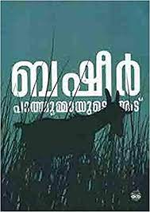

MY BOOKS
.jpg)
Name:Heidi
Author:Johanna Spyri
Pages :142
The story is about an orphan girl, Heidi, who has been sent to live with a lonely, angry man at the top of a
mountain in the Swiss Alps. This man is her grandfather. Heidi had been previously living with her Aunt
Dete, but now Dete has been appointed to a job in Frankfurt
Name: My Expriments with Truth
Author:M.K.Ghandi
pages:272
'Experiments of Truth or Autobiography' is the autobiography of Mahatma Gandhi, covering his life from
early childhood through to 1921. It was written in weekly installments and published in his journal Navjivan
from 1925 to 1929.

Name: Pathummayuder Adu
Author: basheer
Pages: 166
Pathummayude Aadu (Pathumma's Goat; 1959) is a humorous novel by Vaikom Muhammad Basheer. The characters of
the novel are members of his family and the action takes place at his home in Thalayolaparambu. ... Basheer
begins the novel with an alternative title for the book, Pennungalude Buddh

Name: adujeevitham
Author: Benyamin
Pages:299
Aadujeevitham is a 2008 Malayalam novel about an abused migrant worker in Saudi Arabia written by
Bahrain-based Indian author Benyamin (born Benny Daniel). ... The novel depicts the life of Najeeb Muhammed,
an Indian emigrant going missing in Saudi Arabia.